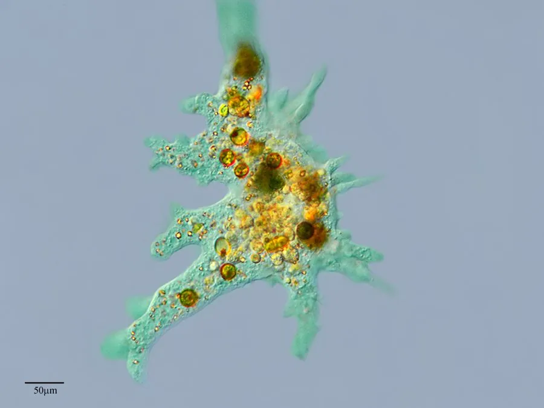

其他无脊椎动物 · 动物界
大变形虫 Amoeba proteus

靠伪足缓慢移动的单细胞原生动物，体形随运动不断变化，用伪足包围吞噬食物，是观察细胞结构的常用材料。
- 分类
- 门变形虫门纲管状变形虫纲目变形虫目科变形虫科属变形虫属
- 栖息环境
- 淡水池塘、湖泊的浅水底部，常在水草、腐叶与淤泥表面爬行
- 地理分布
- 全球淡水水域，中国各地静水池塘可采到
- 保护级别
- 暂无评估
物种志
大变形虫的体长200–500微米，肉眼几乎看不见，在显微镜下像一个不规则的胶质团。它的身体分为外质和内质，外质透明，内质颗粒较多，细胞核、食物泡和伸缩泡都藏在内质里。运动时，细胞质向一个方向流动，伸出指状的伪足，整个身体随之向前挪动。
大变形虫用伪足包围细菌、藻类和有机颗粒，把它们吞进细胞形成食物泡，再靠酶消化吸收。它生活在淡水池塘、湖泊的浅水底部，常在水草、腐叶和淤泥表面缓慢爬行。环境适宜时，它通过二分裂繁殖；干旱或低温时，则缩成球形的包囊，待条件好转再恢复活动。需要说明的是，大变形虫本身并不致病，引起阿米巴痢疾的是另一种叫溶组织内阿米巴的原虫，二者不能混为一谈。它也是研究细胞运动、吞噬和膜结构的经典实验材料。
形态与习性
- 体长200–500微米，肉眼几乎不可见
- 伪足靠细胞质流动伸出伪足，推动身体移动
- 食性用伪足包围细菌、藻类和有机颗粒
- 伸缩泡排出多余水分，调节渗透压
- 生殖环境适宜时以二分裂繁殖
- 包囊干旱或低温时缩成球形包囊
- 提示本身不致病，与溶组织内阿米巴不同
趣味知识
- 它伸出伪足，把整个身体慢慢挪向前方。
- 大变形虫用伪足把食物整个包进细胞里。
- 它并不致病，别把它和痢疾阿米巴混淆。